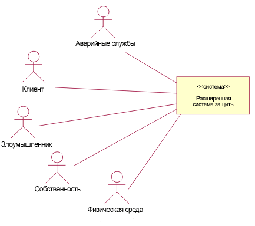
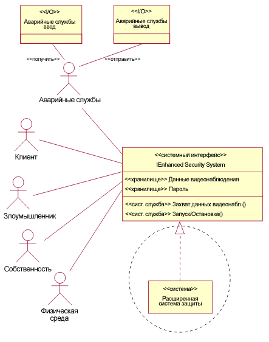

| Задача: Определение контекста системы |
|
 |
| Данная задача определяет, как создать диаграмму системного контекста, показывающую кооперирование верхнего уровня между системой и ее субъектами. |
| Дисциплины: Анализ и проектирование |
|
Назначение
-
Создание кооперирования верхнего уровня основывается на модели вариантов использования . Диаграмма показывает
систему, смоделированную как подсистему верхнего уровня, ее интерфейсы и взаимосвязи с субъектами, включая внешние
сущности ввода и вывода, которые проводят объекты между системой и субъектом.
|
Взаимосвязи
| Роли | Основной исполнитель:
| Дополнительные исполнители:
|
| Входы | Обязательный:
| Необязательный:
|
| Выходы |
|
Шаги
|
Введение
Поскольку модель вариантов использования показывает контекст поведения для системы, в этой задаче изображается
логическая модель системы в ее среде с помощью рабочего
продукта Модель вариантов использования и рабочего продукта Дополнительные спецификации в Диаграмме
контекста.
-
Интерфейсы, которые необходимо реализовать системе (в терминах операций, предоставляемых системой, и
связанных поддерживаемых протоколов, переменные состояния и хранилищ, реализуемых системой, и
атрибутов, описанных как Величина технической характеристики).
-
Сущности ввода-вывода, которые проводят объекты между системой и ее субъектами.
-
Необходимые интерфейсы системы (реализуемые субъектами, которые взаимодействуют с системой) для правильной
работы. В случае, если субъекты системы представляют существующую систему, с которой данная система должна
взаимодействовать, эти необходимые интерфейсы отражают ограничения, наложенные этой внешней системой.
Диаграмма контекста показывает кооперирование верхнего уровня между системой и ее субъектами. Это структурный аналог
модели вариантов использования для системы. Данное кооперирование создается в модели анализа.
Сущности ввода-вывода (представляемые при моделировании как стереотипы классов ввода-вывода с атрибутами, но без
операций) описывают потоки внутрь и вовне системы, и могут в общем случае включать данные, массу, энергию или
физические элементы. Сущности ввода-вывода при моделировании связаны с парами субъект-система, что отражает работу
сущностей ввода-вывода по проведению потока между субъектом и системой. Их можно показать на диаграммах в связи с
субъектами, и направление потока по отношению к субъекту указывается на связи стереотипом "передача" или "прием".
Системная операция - это служба, вызываемая из объекта для выполнения поведения. Операция указывает имя, тип, параметры
и ограничения на вызов связанного поведения. Операции объединяются вокруг интерфейсов вдоль основных полномочий
разрабатываемой (под)системы. Вызов системной операции представляет собой более мелкомодульное взаимодействие с
системой, чем экземпляр варианта использования. Экземпляр варианта использования - это совокупность операций вызова и
ответов.
Хранилища и переменные состояния - это атрибуты, определяемые в интерфейсах, реализуемых системой. Они являются
абстрактными и требуют, чтобы система поддерживала информацию, соответствующую типу и множественности атрибута и
позволяла хранение, поиск и изменение этой информации. При этом не подразумевается, что атрибут в системе прямо
соответствует атрибуту, определенному в интерфейсе. Разница между хранилищами и переменными состояния отражает то, как
атрибуты используются для контроля операций конечного автомата системы. Состояние сохраняется какой-то период времени,
в отличие от события, например, получения сигнала, которое случается в момент времени. Конечный автоматы определяются
немногими переменными, например, текущее состояние может быть определено значением одного атрибута перечислимого типа.
Однако, реакция системы на событие может зависеть не только от характера события (и информации, содержащейся, например,
в операционных параметрах) и текущего состояния, но также от значений многих атрибутов.
Величина технической характеристики - это ключевой атрибут, выбранный из Дополнительных спецификаций или модели
вариантов использования, как основной показатель эффективности системы. Если он не выполняется, это означает, что
возникает риск нарушения запланированных сроков, превышения стоимости и не соблюдения требований по быстродействию.
Поэтому значения этого атрибуты отслеживаются на протяжение существования проекта. Например, может быть необходимо
соблюдать ограничение по весу системы. Таким образом, необходимо отслеживать соблюдение этого параметра при
проектировании и создании системы. Вес системы - это параметр экземпляра системы, и он не обязательно равен целевому
весу при разработке. Например, для системы, запускаемой в космос - чем меньше вес, тем лучше. Для указания целевого
значения Величины технической характеристики можно использовать значение UML в тегах, например:
"Показатель технической характеристики" вес {максимальный_вес = 1000 кг}
Показатель технической характеристики может также применятся к другим не структурным параметрам, таким как время ответа
на операцию. Значения в тегах можно применять к системным операциям или к самой системе для записи.
|
Создать начальную диаграмму контекста
Следующие шаги показывают развитие уровней детализации системы в контексте. Следующий пример иллюстрирует систему
безопасности, защищающую собственность от вторжения. В дополнение к подаче звуковой тревоги система обладает
возможностью извещать соответствующие службы о проникновениях.
При развитии модели вариантов использования в нее добавляются субъекты или, если они уже определены, уточняется их
взаимодействие. Таким образом создается первичное кооперирование и показывается с помощью диаграмма контекста.
Диаграмма контекста может быть создана сначала без системных интерфейсов. Система изображается как подсистема верхнего
уровня (стереотип "системы"), который затем реализует несколько интерфейсов. Субъекты и их связи сначала изображаются
без детализации.

Начальная диаграмма контекста
|
Уточнение связей и интерфейсов
Далее необходимо уточнить связи между субъектами и системой, а также системные интерфейсы. Требуется анализ системных
операций и системных атрибутов при их появлении в задаче
Поиск субъектов и вариантов использования (Позднее Задача
Детализация варианта использования). Обратите внимание, что теперь система общается с субъектами посредством
интерфейсов. Можно выделить данную реализацию пунктирным кругом, но можно опустить выделение без какой-либо потери
смысла.
На данном этапе сущности ввода-вывода определяются только экспериментально на основании сведений о проблемной области,
а также предварительной работы по созданию вариантов использования на уровне организации. Обратите внимание, что
на диаграмме не обязательно показывать сущности ввода-вывода, но это полезно для анализа взаимодействия
субъект-система.
Таким образом, можно начать описывать связи между субъектами и системой и поток сущностей между ними.

Предварительная диаграмма контекста
|
Детализация системных операций и других системных параметров.
На этом шаге создаются сценарии вариантов использования (экземпляры вариантов использования), с помощью которых можно
описывать системные операции (предоставляемые и необходимые). Сценарии можно иллюстрировать с помощью диаграмм
взаимодействия или операций. Каждый черный ящик в варианте использования представляет мелкомодульное взаимодействие с
системой и соответствует вызову операции, но не обязательно уникальной - другие черные ящики также могут использовать
эту операцию. Вариант использования комментируется для трассируемости вызываемой операции, а системная операция
определяется в диаграмме контекста (и следовательно в модели анализа). Операции наследуют технические и другие не
функциональные требования, связанные с черным ящиком. Имена в черных ящиках соответствуют хранилищам и переменным
состояния, которые система должна поддерживать для выполнения сценария варианта использования. Также можно
уточнить необходимые сущности ввода-вывода и связать их с вызовами операций для передачи сигналов между системой и
субъектами.
Можно также разделить системный интерфейс на специфические интерфейсы в соответствии с требованиями, содержащимися в
Дополнительных спецификациях. Рисунок ниже показывает развитие системного интерфейса в "предоставляемый системный
интерфейс" для каждого типа субъекта (хотя это не является обязательным требованием). Субъекты могут совместно
использовать интерфейс, а также может быть несколько интерфейсов для каждого субъекта.
Данный анализ также может определить, какие интерфейсы необходимы системе, т.е. должны поддерживаться субъектами
для обработки сообщений системы. Это можно добавить на диаграмму симметричным способом, например, как показано на
диаграмме ниже - "необходимый системный интерфейс" службы IE/ESS, реализованный субъектом аварийной службой.
Напомним, что, хотя это не показано на диаграмме, субъект может поддерживать или реализовывать несколько
интерфейсов.
Операции, хранилища и т.д. необходимо добавлять к расширенной версии интерфейсов в отделения атрибутов и операций, как
показано на диаграмме. По причине экономии места диаграмма выполнена частично. Интерфейс с физической средой, субъекты
и т.д. не раскрыты. Обратите внимание, что реализацию предоставляемых системных интерфейсов можно опустить без потери
передаваемого смысла.

Завершающая диаграмма контекста
Данное кооперирование верхнего уровня, показанное на диаграмме контекста, позволяет точно специфицировать интерфейсы,
связи, входящие и исходящие системные потоки, а также операционные параметры, что позволяет разрабатывать систему
независимо от других элементов системного контекста.
|
|
© Copyright IBM Corp. 1987, 2006. Все права защищены..
|
|